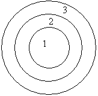
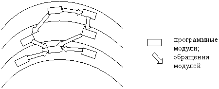
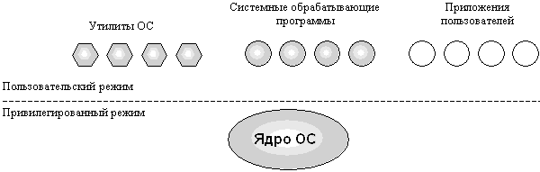
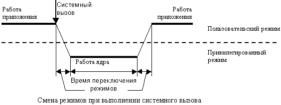

Под архитектурой ОС понимают структурную организацию операционной системы на основе различных программных модулей.
В состав ОС входит множество модулей (т.е. частей со строго определенными функциями и правилами их взаимодействия). Это исполняемые и объектные модули стандартных форматов, библиотеки разных типов, конфигурационные файлы, файлы документации, программные модули специального формата (загрузчик ОС, драйверы ввода/вывода)… Все эти модули ОС можно разделить на два больших класса:
Охарактеризуем каждый из этих классов.
Функции, выполняемые ядром, являются наиболее часто используемыми функциями ОС, поэтому скорость их выполнения определяет производительность системы в целом. Для обеспечения высокой скорости работы ОС все модули ядра (или большая их часть) постоянно находятся в оперативной памяти, т.е. являются резидентными.Надежность кодов ядра определяет надежность всей ОС.Обычно ядро оформляется в виде программного модуля некоторого специального формата, отличающегося от форматов пользовательских приложений.Существует два подхода к построению ядра – это монолитное ядро (классический подход) и микроядерная архитектура. При монолитном ядре оно является, по сути, обычной программой, т.е. состоит не из отдельных самостоятельных модулей, а из процедур и функций. При микроядерном подходе к построению ядра все его составляющие являются самостоятельными программами и, возможно, выполняются в разных адресных пространствах. Взаимодействие между ними осуществляет специальный модуль ядра, называемый микроядром.Ниже рассмотрим эти подходы подробно.
Грань между пользовательскими приложениями и ОС является весьма условной. Нередко бывает, что за время существования приложения его статус меняется. Если какое-то приложение оказывается достаточно востребованным, то при очередной модификации операционной системы оно может быть включено в её состав. Например, Web-браузер компании Microsoft изначально являлся отдельным приложением, затем стал частью ОС Windows NT версии 4.0 и Windows 95/98.Вспомогательные модули ОС обычно подразделяются на следующие группы:
Вспомогательные модули ОС загружаются в оперативную память только на время выполнения своих функций, т.е. являются транзитными.
Такая архитектура обеспечивает расширяемость и безопасность операционной системы.
Контрольные вопросы
Вычислительную систему, работающую под управлением ОС на основе ядра, можно рассматривать как систему, состоящую из трех иерархически расположенных слоев:


Ядро может состоять из следующих слоев:
Приведенное разбиение на слои является достаточно условным. В реальной системе количество слоев и распределение функций между ними может быть иным. Кроме того, иногда нарушается иерархия и обращения осуществляются через слой. Выбор количества слоев является очень важным, т.к. увеличение их количества замедляет работу системы, поскольку увеличивается количество межслойных обращений, а уменьшение – ухудшает расширяемость и логичность системы.
Интерфейс прикладного программирования
Прикладные программисты используют в своих приложениях обращения к ОС, когда для выполнения тех или иных действий им требуется особый статус, которым обладает только операционная система. Программист для своих целей может воспользоваться набором сервисных функций ОС либо реализовать соответствующую функцию самостоятельно, если предлагаемый операционной системой вариант его не вполне устраивает.Возможности операционной системы доступны прикладному программисту в виде набора функций, называющегося интерфейсом прикладного программирования – API. Как уже обсуждалось, эти функции представляют собой верхний слой ядра ОС.Для разработчиков приложений все особенности конкретной операционной системы представлены особенностями её API. Поэтому операционные системы с различной внутренней организацией, но с одинаковым набором функций API, кажутся им одной и той же ОС. Это упрощает стандартизацию операционных систем и обеспечивает переносимость приложений между внутренне различными ОС, соответствующими определенному стандарту на API.
Приложения выполняют обращения к функциям API с помощью системных вызовов. Способ реализации системных вызовов зависит от структурной организации ОС, которая, в свою очередь, тесно связана с особенностями аппаратной платформы. Кроме того, он зависит от языка программирования. При использовании языка программирования высокого уровня функции ОС вызываются тем же способом, что и написанные пользователем подпрограммы, требуя задания определенных аргументов в определенном порядке.
Пользовательский интерфейс
Операционная система должна обеспечивать удобный интерфейс не только для прикладных программ, но и для человека, работающего за терминалом. Этот человек может быть конечным пользователем, программистом или администратором ОС.В ранних операционных системах пакетного режима функции пользовательского интерфейса были минимальными и не требовали наличия терминала. Команды языка управления набивались на перфокарты, а результаты выводились на печатающее устройство.Современные ОС поддерживают развитые функции пользовательского интерфейса для работы за терминалами двух типов: алфавитно-цифровыми и графическими.При работе за алфавитно-цифровым терминалом пользователь имеет в своем распоряжении систему команд, мощность которой отражает функциональные возможности данной ОС. Обычно командный язык ОС позволяет запускать и останавливать приложения, выполнять различные операции с файлами и каталогами, получать информацию о состоянии ОС (количество работающих процессов, объем свободного пространства на дисках и т.п.), администрировать систему. Команды могут вводиться в интерактивном режиме с терминала или считываться из командного файла, содержащего некоторую последовательность команд. Программный модуль ОС, ответственный за чтение команд, называют командным интерпретатором.
Если операционная система поддерживает графический пользовательский интерфейс, ввод команды упрощается. В этом случае пользователь для выполнения нужного действия с помощью мыши выбирает необходимый пункт меню или графический символ.
Контрольные вопросы
Монолитное ядро является старейшим принципом организации ОС. Оно применяется в большинстве UNIX-систем. Сборка ядра, т.е. его компиляция – это единственный способ добавить в него новые компоненты или исключить неиспользуемые. Присутствие лишних компонент в ядре нежелательно, т.к. оно располагается в несвопируемой памяти (т.е. не может быть вытеснено из физической памяти). Кроме того, исключение ненужных компонент повышает надежность операционной системы в целом.
Для надежного управления вычислительным процессом ОС должна иметь по отношению к приложениям определенные привилегии. Рассмотрим, в чем они состоят.
Во-первых, все основные функции ОС, составляющие ядро, выполняются в привилегированном режиме, т.е. аппаратура должна поддерживать как минимум два режима работы – пользовательский и привилегированный (т.н. режим ядра). Вспомогательные функции ОС при этом оформляются в виде приложений и выполняются в пользовательском режиме наряду с обычными пользовательскими программами (см. рисунок).

Приложения ставятся в подчиненное положение за счет запрета в пользовательском режиме некоторых инструкций (переключение процессора с задачи на задачу, управление механизмом защиты памяти). Некоторые инструкции запрещены в пользовательском режиме безусловно (например, инструкция перехода в привилегированный режим), а некоторые – при определенных условиях. Например, инструкция ввода-вывода может быть запрещена при доступе к контроллеру жесткого диска, который хранит данные, общие для ОС и всех приложений, но разрешена при доступе к последовательному порту, который выделен в монопольное владение данному приложению. Условия разрешения выполнения критичных инструкций находятся под полным контролем ОС.
Во-вторых, привилегии ОС при доступе к памяти выражаются в том, что код ядра имеет доступ к областям памяти всех приложений, но сам полностью от них защищен. Каждое приложение пользовательского режима работает в своем адресном пространстве и тем самым защищено от вмешательства каких-либо других приложений.
Взаимодействие между пользовательской программой и ядром ОС осуществляется посредством системных вызовов. Системный вызов очень похож на обращение к обычной функции, отличие состоит в том, что при системном вызове задача переходит в режим ядра. В этом режиме работает код ядра ОС, причем он исполняется в адресном пространстве и в контексте вызвавшей его задачи.
Системный вызов реализуется посредством программного прерывания (см. рисунок).
В момент системного вызова обработчик прерывания переключает стек на стек режима ядра, а после завершения обработки системного вызова – обратно на стек режима пользователя. При этом каждый процесс должен иметь свой собственный стек режима пользователя и стек режима ядра.

Стек режима пользователя должен быть уникальным, поскольку состояние стека является частью контекста, т.е. должно сохраняться при переключении. Отдельный стек режима ядра нужен по следующим причинам. Со своим стеком программа может делать, что хочет, в том числе может создать несколько стеков и переключаться между ними. Она сама определяет размер своего стека. Если предположить, что код ядра исполняется на том же стеке, что был у пользователя в момент системного вызова, то нельзя гарантировать, что стек будет иметь достаточный размер. Следовательно, может возникнуть исключительная ситуация, а такое событие в режиме ядра может привести к краху всей системы. Если в режиме ядра находится несколько процессов, то для каждого из них создается свой стек режима ядра.
Иногда разработчики ОС отступают от классической схемы, изложенной выше, и организуют работу ядра и приложений в одном и том же режиме.
Примеры.
Микроядерная архитектура – это такая схема ядра ОС, при которой все его компоненты, кроме микроядра, являются самостоятельными процессами, работающими, возможно, в разных адресных пространствах, и взаимодействуют друг с другом путем передачи сообщений.
Микроядро – это модуль ядра ОС, обеспечивающий взаимодействие между процессами, планирование процессов, первичную обработку прерываний и базовое управление памятью.
В привилегированном режиме остается работать только микроядро, которое защищено от остальных частей ОС и приложений. Набор функций микроядра обычно соответствует функциям слоя базовых механизмов обычного ядра. Остальные, более высокоуровневые функции ядра, оформляются в виде приложений, работающих в пользовательском режиме (см. рисунок).
Опять же не существует однозначного решения, какие функции относить к микроядру, а какие – оформлять отдельными модулями. В общем случае многие менеджеры ресонтрольн, являющиеся обычно составными частями монолитного ядра (файловая система, менеджер безопасности, подсистемы управления виртуальной памятью и процессами), становятся модулями, работающими в пользовательском режиме.
Но менеджеры ресонтрольн, хотя и работают в пользовательском режиме, имеют принципиальные отличия от традиционных утилит и обрабатывающих программ операционной системы. Утилиты и обрабатывающие программы вызываются пользователями, поэтому в ОС с классической архитектурой отсутствует механизм вызова одного приложения другим. При микроядерной архитектуре приложения, выделенные из состава ядра, специально предназначены для обслуживания запросов других приложений (например, создание процесса, выделение памяти, проверка прав доступа к ресурсу и т.п.). Поэтому менеджеры ресонтрольн, вынесенные в пользовательский режим, называются серверами ОС, т.е. модулями, основным назначением которых является обслуживание запросов локальных приложений и других модулей ОС.
Очевидно, что необходимым условием для реализации микроядерной архитектуры является наличие удобного и эффективного способа вызова процедур одного процесса из другого. Осуществление этого механизма является одной из главных задач микроядра. Схема механизма обращения к функциям ядра ОС, оформленным в виде серверов (причем это обращение может осуществляться как со стороны приложения, так и со стороны другого сервера), имеет следующий вид (см. рисунок).
Клиент (прикладная программа или компонент ОС) запрашивает у сервера выполнения некоторой функции, посылая ему для этого сообщение. Непосредственная передача сообщений между приложениями невозможна в силу изоляции их адресных пространств. Микроядро, работающее в привилегированном режиме, имеет доступ к адресным пространствам всех приложений, поэтому может выполнять функции посредника. Микроядро передает сообщение, содержащее имя и параметры вызываемой процедуры, нужному серверу, тот выполняет операцию, после чего ядро возвращает результаты клиенту с помощью другого сообщения. Таким образом, микроядерная архитектура соответствует модели клиент–сервер, в которой роль транспортных средств выполняет микроядро.
Мы рассмотрели две модели архитектуры ядра ОС. Каждая имеет свои достоинства и недостатки, поэтому ни одна из них не может полностью вытеснить другую.ОС с микроядерной архитектурой удовлетворяет большинству требований, предъявляемых к современной ОС, обладая переносимостью, расширяемостью, надежностью.
Действительно, множественность и размытость межслойных интерфейсов классической ОС ухудшает расширяемость такой системы. Напротив, ограниченный набор четко определенных интерфейсов микроядра позволяет легко добавлять новые функции путем простой разработки новых приложений. Отключение ненужных функций ОС осуществляется изменением файла настроек начальной конфигурации системы.
Надежность системы с микроядром повышается потому, что каждый сервер работает в своей области памяти и не может влиять не только на микроядро, но и на другие модули ОС. Уменьшение кода микроядра также уменьшает вероятность ошибок.
Сведем все вышесказанное в таблицу для удобства сравнения.
|
Монолитная архитектура |
Микроядерная архитектура |
|
|
|
|
|
|
|
|
|
|
|
Основным недостатком микроядерного подхода является снижение производительности, т.к. вместо обычных двух переключений режимов при выполнении системного вызова в ОС с классической архитектурой здесь происходит четыре переключения (см. рисунок выше).
Следовательно, ОС на основе микроядра при прочих равных условиях всегда будет менее производительной, чем ОС с классической архитектурой. Этим объясняется то, что микроядерный подход не получил того распространения, которое ему предрекали.
Для повышения производительности ОС некоторые часто используемые приложения вносятся в состав микроядра. Например, в ОС Windows NT 3.1, 3.5 диспетчер окон, графическая библиотека входили в состав сервера пользовательского режима. Частое использование этих приложений снижало производительность всей системы. Поэтому при разработке очередной версии системы – Windows NT 4.0 – эти функции были внесены в микроядро, что существенно повысило эффективность работы системы.
Архитектура большинства современных ОС содержит как черты монолитного ядра, так и элементы микроядерной архитектуры. Один из подходов выбирается в роли базового, с последующими коррективами в сторону альтернативного подхода. Ранее говорилось о необходимости перекомпиляции монолитного ядра для внесения изменений – например, для изменения аппаратных драйверов. В современных UNIX-системах этот недостаток устранен за счет динамической загрузки драйверов устройств. Т.е., хотя драйверы и работают в едином адресном пространстве, они должны иметь четко специфицированный интерфейс с остальной частью ядра ОС, чтобы обеспечить их загрузку в любой момент времени. В ядре Linux разрешена динамическая загрузка любых компонент ядра – т.н. модулей. В момент загрузки модуля его код загружается в адресное пространство ядра и связывается с остальной частью ядра.
Существуют системы с монолитным ядром под управлением микроядра (например, 4.4 BSD и MkLinux, основанные на микроядре Mach). Микроядро управляет виртуальной памятью и работой низкоуровневых драйверов. Остальные функции, в т.ч. взаимодействие с прикладными программами, выполняет монолитное ядро.
Операционная система Windows NT, например, хотя и cчитается микроядерной, но имеет также и черты классической ОС. Микроядро её слишком сложно и велико, чтобы иметь приставку "микро" (оно занимает более 1 мегабайта). Компоненты ядра взаимодействуют друг с другом путем передачи сообщений, как в микроядерной ОС. Но в то же время они работают в одном адресном пространстве и используют общие структуры данных, как ОС с монолитным ядром. Таким образом, ОС Windows NT с полным правом может называться гибридной.